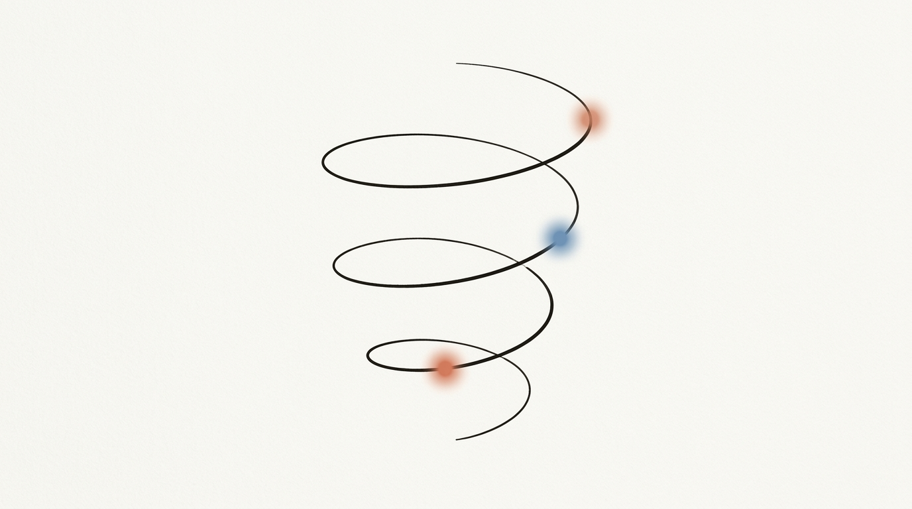
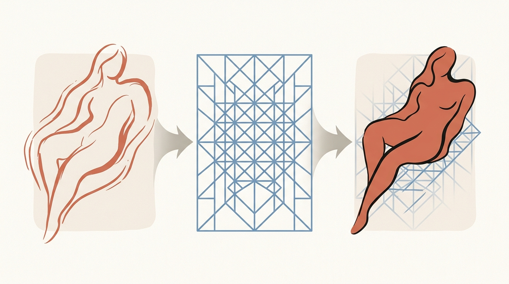
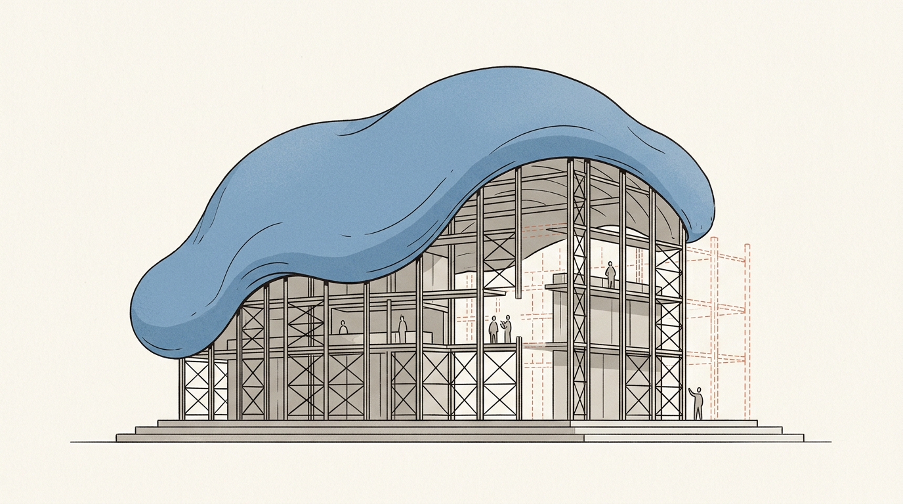
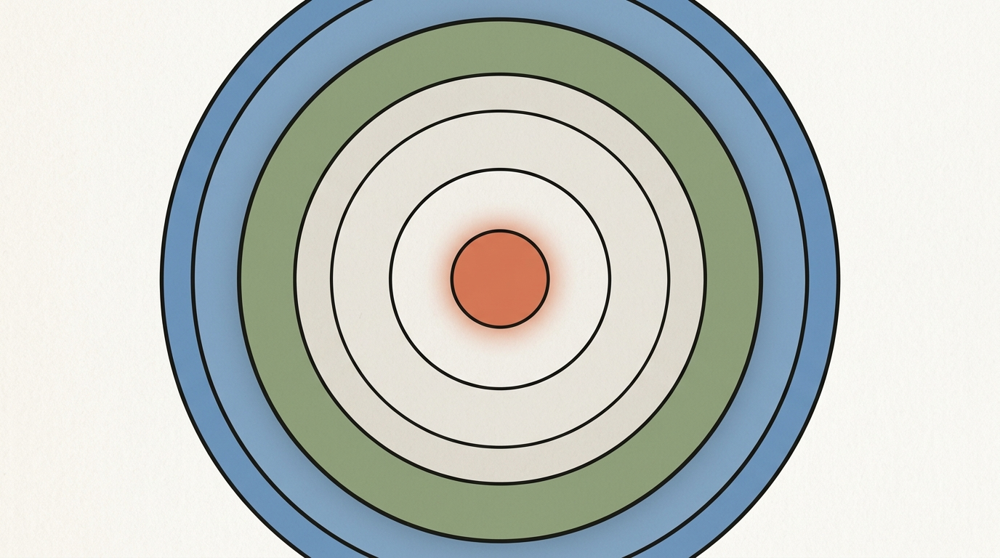

Эссе о том, как примитивы программирования возвращаются на новом витке спирали — и где в этой картине место агентным harness-движкам.

Прежде чем сопоставлять «цикл → goal» и «функцию → skill», нужно найти сам закон спирали — иначе получится не диалектика, а словарь синонимов. Закон такой:
Возврат естественного языка через отрицание формального.
Три такта большого витка:
malloc. Выразительность принесена в жертву точности. Вся башня абстракций (asm → C → ООП → DSL/SQL) — это медленный подъём обратно: каждый слой отвоёвывает у «как» немного «что».Это и есть снятие (Aufhebung): формальное отменено как обязательная поверхность, сохранено как исполняющий слой и поднято на уровень, где им управляет намерение.
И ключевое: каждое частное соответствие ниже — это один и тот же ход в миниатюре. Любой примитив проходит путь естественный → формальный → исполнимо-естественный, и формальная версия не исчезает, а уходит «под капот». Поэтому дальше — не пары, а триады.

while (cond) { body } — нужно формализовать условие выхода, тело и счётчик. Точно, но всю логику выхода несёт на себе программист./goal) + критерий готовности (DoD). Намерение цикла снова заявляется на естественном языке, но терминальность обеспечивает формальный судья — DoD-чеклист или LLM-классификатор. while никуда не делся: он крутится снизу как шаговый цикл агента (tool call → результат → решение).cond.if x > 5 {...} else {...} — обстоятельства сведены к булеву предикату.if сохранён внутри как маршрутизация между ветвями; новое качество — семантика вместо предиката.Самый богатый узел: формальный урок здесь — область видимости (scope) — целиком переносится в синтез как дисциплина файлов.
malloc/free). Память точная, но отчуждённая: программист вручную решает, что живёт и что освобождать.| Scope (формальный урок) | Антитезис | Синтез (AI-harness) |
|---|---|---|
| Локальная (стек) | int x в функции |
In-context: факты текущего разговора |
| Глобальная | global config |
Конфиг проекта (правила, DoD, запреты) |
| Статическая / межмодульная | static |
Сквозная память — cross-session, cross-project |
| Персистентная | БД, файлы | Живые документы — backlog, контракт цикла |
| Внешняя | env vars | Секреты, бюджет API, ключи |
def f(typed args) -> typed return — привычка формализована в сигнатуру с типами.Здесь снятие тоньше: классическая структура не «заменяется», а становится способом организации намерений и состояния.
| Классика | Снятие в harness | Операции |
|---|---|---|
| Массив / список | Backlog — упорядоченные задачи | push (новая задача), pop (в работу), iterate |
| Стек (LIFO) | Контекстное окно: свежее — в фокусе | LIFO-приоритет недавнего |
| Очередь (FIFO) | Очередь фоновых агентов | агент берёт по порядку |
| Хеш-таблица | Конфиг: ключ-слово → правило | lookup правила по триггеру в промпте |
| Дерево | Декомпозиция: фазы → задачи → подзадачи | обход в глубину = раскрытие |
| Граф (DAG) | Зависимости задач (depends_on) |
топосортировка → порядок работы |
| Trie (бор) | Пространство команд | prefix-matching команд |
| Префиксные суммы / дерево отрезков | Checkpoint-ы прогресса | каждый закрытый цикл — сохранённый префикс |
Анализ сложности не исчезает — меняются оси ресурсов:
| RAM-модель | Модель агента |
|---|---|
| Время | Latency LLM (p50/p95), длина агентского цикла |
| Память | Контекстное окно (токены), размер сквозной памяти |
| — (новое) | Стоимость ($/1M токенов) — ось, которой не было |
| Параллелизм | Concurrent agents (типичный cap ≈ числу ядер) |
Нижняя оценка задачи сохраняется буквально: есть структурно невыполнимое. Задача, чьи входные данные не помещаются в контекстное окно целиком, упирается в предел ресурса так же, как O(n²) на n=10⁶ упирается во время, — это не дефект реализации, а граница модели вычислений.
async/await, корутины, потоки, mutex.Направление — фоновые агенты как производственная практика — наблюдается уже у нескольких независимых систем, и open-source, и внутрикорпоративных. Конкретные публичные метрики охвата здесь вторичны; важно само направление: автономный агент, работающий по расписанию рядом с командой, перестал быть экзотикой.

Диалектика не только описывает прошлое — она предсказывает пробелы. Пробел всегда там, где мы уже вернулись к естественно-языковому намерению, но формальный слой под ним ещё не достроен. Это и есть карта того, что harness-движкам предстоит отрастить:
| Формальный инструмент, который «вернётся» | Чего пока нет | Зародыш, который уже видно |
|---|---|---|
| Отладчик | Есть трейс инструментов, нет трейса намерений — почему агент так решил | логи tool-calls, transcript |
| Компилятор/тайп-чекер целей | Нет статической проверки, что цель + DoD совместны и достижимы до траты токенов | DoD-чеклисты вручную |
| Линкер + GC памяти | Нет авторазрешения связей и детекции протухших фактов между файлами памяти | [[wikilinks]] в памяти, ручная ревизия |
| Пакетный менеджер навыков | Навыки — это функции, но нет версионированного реестра с разрешением зависимостей | lock-файлы для наборов навыков — первые ласточки |
| Тест-фреймворк для вероятностных функций | Как юнит-тестировать навык, чья реализация недетерминирована | eval-харнессы, бенчмарки |
| Транзакции / rollback | Нет ACID над действиями агента; «откатить шаг» = вручную | worktree-изоляция — зачаток атомарности |
Практическая выжимка: новые возможности harness ложатся не куда угодно, а в недостающие формальные слои синтеза. Каждая строка таблицы — кандидат на следующую значимую фичу.
Все векторы — это достраивание синтеза до конца: вернуть формальную мощь под естественно-языковую поверхность.
Goal + Constraints + DoD + Context, переносимый между движками.
Принцип — прямое следствие раздела 2: scope памяти = область применимости знания (а не видимости имени).
[in-context] текущий разговор — исчезает с сессией
↑
[сквозная память] паттерны для ЛЮБОГО проекта
(feedback, предпочтения, cross-project инсайты)
↑
[конфиг проекта] стек, DoD, запреты, команды, инварианты
↑
[живые документы] backlog, контракт цикла, лог анализа —
текущее состояние работы
↑
[.env, config] секреты и runtime (не для агента в открытую)
Куда класть: - Сквозная память — паттерн поведения, предпочтение, cross-project инсайт. Критерий: нельзя переоткрыть из кода и применимо за пределами одного проекта. - Конфиг проекта — стек, бюджет, дизайн-токены, DoD проекта, команды, запреты. - Backlog — задачи, статус итерации, known issues. Живой, не архив. - Контракт цикла (DoD) — стабилен до конца цикла, меняется только между Major-версиями (см. семантическое версионирование циклов ниже).
Чего НЕ класть в сквозную память: конкретный код (протухает), списки PR / activity (это git), текущие TODO (это backlog), архитектурные решения (это конфиг проекта или код).
Семантическое версионирование циклов: Major = смена цели; Minor = закрыт цикл (DoD выполнен); Patch = hotfix без закрытия DoD.
Гигиена памяти как GC: если файл памяти называет файл, флаг или функцию — перед опорой на него стоит проверить, что они ещё существуют. Память отражает момент записи, не «сейчас». Это и есть тот самый недостающий «GC + линкер» из раздела 7, пока исполняемый вручную.
Отдельная практика, которая напрашивается из всей картины, — bootstrap-документ: аналог init() для проекта. Один файл, который агент читает первым и получает «операционную систему» проекта: суть, стек, запреты и разрешения, структуру backlog, DoD по умолчанию, инварианты, команды, ресурсные лимиты.
Его связь с конфигом проекта диалектична: bootstrap — стартовый снимок (заполняется один раз при запуске), конфиг проекта — живой документ (эволюционирует по ходу работы). Граница между ними — один из открытых вопросов ниже.
Минимальный скелет такого документа:
1. Суть проекта (1 абзац)
2. Стек (backend / frontend / провайдер модели / бюджет)
3. Запрещено агенту (DO NOT) — pre-condition assertions
4. Разрешено без подтверждения
5. Структура backlog (формат задачи, depends_on, правило роста)
6. DoD по умолчанию (post-condition)
7. UI/UX правила (если есть)
8. Ключевые команды
9. Ресурсные лимиты (контекст / стоимость / параллелизм)
10. Инварианты (что не должно меняться)